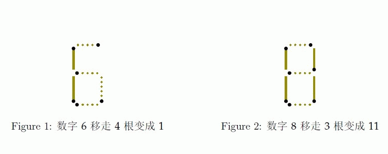

输入仅含一行，分别是长度为n 的十进制数x 和最多移动火柴棍的数量k。x 没有前导零。
对于30% 的数据，1 <= n <= 10，0 <= k <= 10。
对于100% 的数据，1 <= n <= 500，0 <=k <=3500。
Fish是一条生活在海里的鱼，有一天他很无聊，于是他去捡了人类扔进海里的垃圾，打算用这些来玩些什么。他从捡回来的垃圾堆里找到了不少火柴棍，便把这些火柴棍拼成了一个长度为n 的十进制数，每个数字的拼法如下图所示
注意：每个数字占据的宽度和摆放方式是固定的，故以下情况均不合法。

拼完之后他好累，感觉再也不会拼了。
输入仅含一行，分别是长度为n 的十进制数x 和最多移动火柴棍的数量k。x 没有前导零。
对于30% 的数据，1 <= n <= 10，0 <= k <= 10。
对于100% 的数据，1 <= n <= 500，0 <=k <=3500。
输出仅一行，表示移动火柴棍之后的最大数。
Sample #1
3 2
Sample #2
3 3
Sample #1
17
Sample #2
71
应上传者要求，此系列试题不公开,如有异议，本站将删除之。